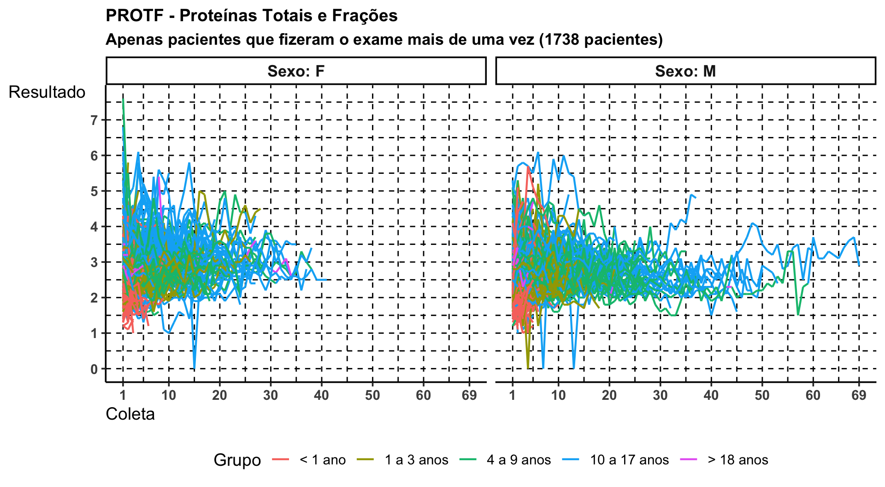
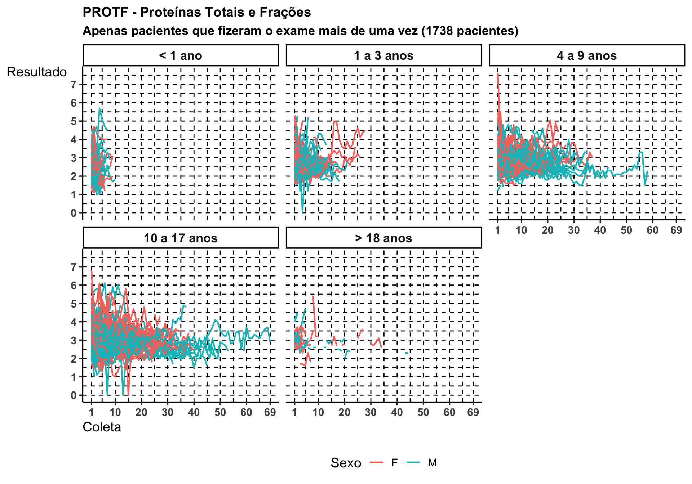
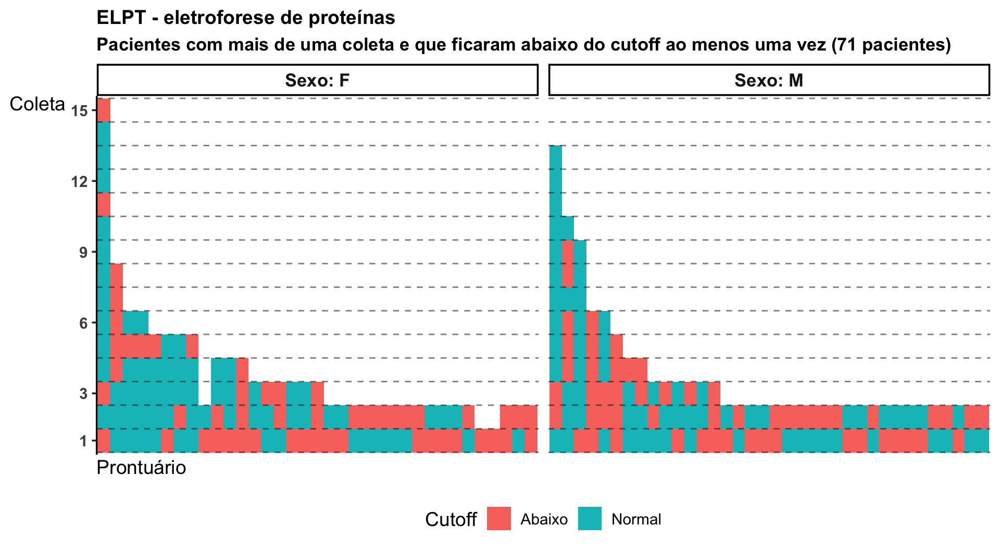
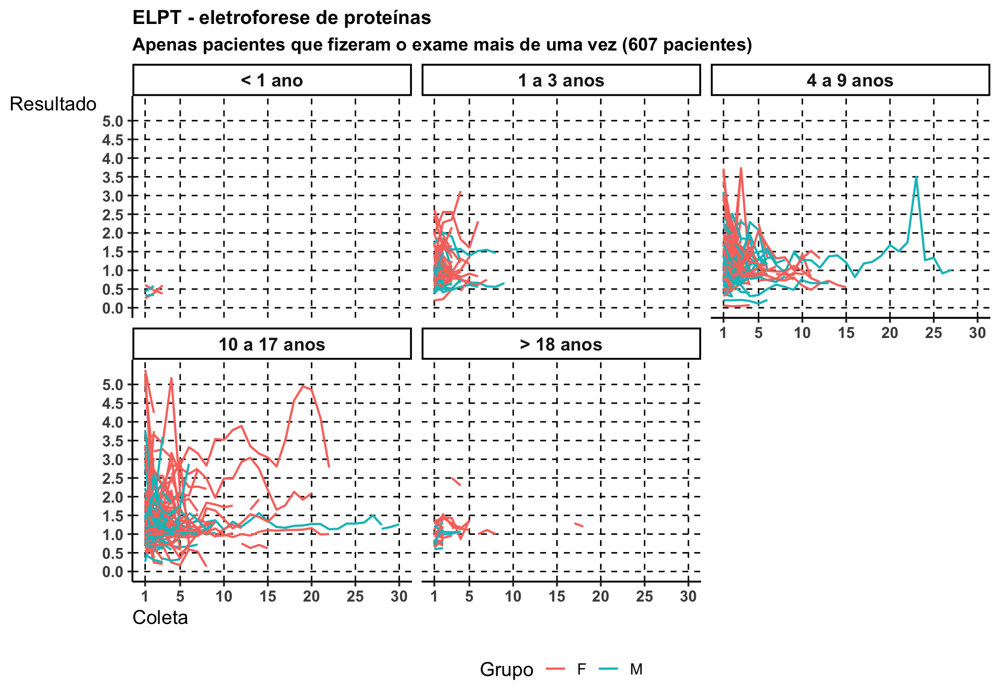

Min. 1st Qu.
"1929-10-09 00:00:00.0000" "2006-01-11 00:00:00.0000"
Median Mean
"2011-01-08 00:00:00.0000" "2010-09-19 01:17:04.5266"
3rd Qu. Max.
"2015-08-20 00:00:00.0000" "2024-10-25 00:00:00.0000"
E das datas de coleta:
Code
summary(protf$DC)
Min. 1st Qu.
"2015-01-02 00:00:00.0000" "2016-11-20 18:00:00.0000"
Median Mean
"2019-03-27 12:00:00.0000" "2019-05-31 03:34:01.7128"
3rd Qu. Max.
"2021-10-02 00:00:00.0000" "2024-10-31 00:00:00.0000"
Idade:
Code
summary(protf$IDADE)
Min. 1st Qu. Median Mean 3rd Qu. Max.
-0.263 3.515 8.558 8.696 13.154 88.575
Resultados:
Code
summary(protf$RESULTADO)
Min. 1st Qu. Median Mean 3rd Qu. Max.
0.000 2.400 2.700 2.784 3.100 8.000
Para cada grupo temos sua nota de corte, e assim mostramos quantos exames (E) estão abaixo (ABA) de tal cutoff e de quantos pacientes (P) diferentes geram esses exames (junto temos a média de exames por paciente).
protf_ids <- protf |> dplyr::count(PRONTUARIO) |> dplyr::arrange(dplyr::desc(n)) |> dplyr::filter(n >1) |> dplyr::pull(PRONTUARIO)protf |> dplyr::filter(PRONTUARIO %in% protf_ids) |> dplyr::select(c(PRONTUARIO, SEXO, DC, GRUPO, RESULTADO)) |> dplyr::arrange(PRONTUARIO, DC) |> dplyr::group_by(PRONTUARIO, SEXO) |> dplyr::mutate(COLETA = dplyr::row_number()) |> dplyr::ungroup() |>ggplot() +aes(x = COLETA, y = RESULTADO, group = PRONTUARIO, color = GRUPO) +geom_vline(xintercept =c(1, seq(from =5, to =65, by =5), 69),linetype ="dashed" ) +geom_hline(yintercept =seq(from =0, to =7.5, by =0.5),linetype ="dashed" ) +geom_line(linewidth =0.75) +facet_wrap(~ SEXO,labeller = ggplot2::labeller(SEXO = \(x) paste("Sexo:", x)) ) +scale_x_continuous(breaks =c(1, seq(from =10, to =60, by =10), 69) ) +scale_y_continuous(breaks =seq(from =0, to =8, by =1)) +labs(x ="Coleta", y ="Resultado", color ="Grupo", title ="PROTF - Proteínas Totais e Frações",subtitle =paste("Apenas pacientes que fizeram o exame mais de uma vez", "(1738 pacientes)" ) ) +theme(legend.position ="bottom")

Code
protf_ids_var <- protf |> dplyr::filter(PRONTUARIO %in% protf_ids) |> dplyr::arrange(PRONTUARIO, DC) |> dplyr::count(PRONTUARIO, VALOR) |> tidyr::pivot_wider(values_from = n, names_from = VALOR, values_fill =0) |> dplyr::filter(! Abaixo ==0) |> dplyr::pull(PRONTUARIO)protf_ids_sort <- protf |> dplyr::filter(PRONTUARIO %in% protf_ids_var) |> dplyr::count(PRONTUARIO) |> dplyr::arrange(dplyr::desc(n)) |> dplyr::pull(PRONTUARIO)protf |> dplyr::filter(PRONTUARIO %in% protf_ids_var) |> dplyr::arrange(PRONTUARIO, DC) |> dplyr::select(PRONTUARIO, SEXO, VALOR) |> dplyr::mutate(PRONTUARIO =factor(PRONTUARIO, levels = protf_ids_sort)) |> dplyr::group_by(PRONTUARIO, SEXO) |> dplyr::mutate(COLETA = dplyr::row_number() |>as.factor()) |> dplyr::ungroup() |>ggplot() +aes(x = PRONTUARIO, y = COLETA, fill = VALOR) +geom_tile() +# geom_vline(# xintercept = seq(70) - 0.5,# linetype = "dashed", alpha = 0.5# ) +facet_wrap(~ SEXO,scales ="free_x",labeller = ggplot2::labeller(SEXO = \(x) paste("Sexo:", x)) ) +scale_x_discrete(labels =NULL, breaks =NULL) +scale_y_discrete(breaks =c("1", "10", "20", "30", "40", "50", "60", "69") ) +labs(x ="Prontuário", y ="Coleta", fill ="Cutoff",title ="PROTF - Proteínas Totais e Frações",subtitle =paste("Pacientes com mais de uma coleta e que ficaram abaixo do cutoff ao","menos uma vez (718 pacientes)" ) ) +theme(legend.position ="bottom")
Acima, cada linha vertical é um paciente. Se ela muda de cor significa que houve variação em termos de abaixo ou não do cutoff do momento (com base na idade).
Abaixo, a mesma informação dos dois gráficos acima mas vistos de uma maneira alternativa.
Code
protf |> dplyr::filter(PRONTUARIO %in% protf_ids) |> dplyr::select(c(PRONTUARIO, SEXO, DC, GRUPO, RESULTADO)) |> dplyr::arrange(PRONTUARIO, DC) |> dplyr::group_by(PRONTUARIO, SEXO) |> dplyr::mutate(COLETA = dplyr::row_number()) |> dplyr::ungroup() |>ggplot() +aes(x = COLETA, y = RESULTADO, group = PRONTUARIO, color = SEXO) +geom_vline(xintercept =c(1, seq(from =5, to =65, by =5), 69),linetype ="dashed" ) +geom_hline(yintercept =seq(from =0, to =7.5, by =0.5),linetype ="dashed" ) +geom_line(linewidth =0.75) +facet_wrap(~ GRUPO) +scale_x_continuous(breaks =c(1, seq(from =10, to =60, by =10), 69) ) +scale_y_continuous(breaks =seq(from =0, to =8, by =1)) +labs(x ="Coleta", y ="Resultado", color ="Sexo", title ="PROTF - Proteínas Totais e Frações",subtitle =paste("Apenas pacientes que fizeram o exame mais de uma vez", "(1738 pacientes)" ) ) +theme(legend.position ="bottom")

Code
protf |> dplyr::filter(PRONTUARIO %in% protf_ids_var) |> dplyr::arrange(PRONTUARIO, DC) |> dplyr::select(PRONTUARIO, SEXO, VALOR) |> dplyr::mutate(PRONTUARIO =factor(PRONTUARIO, levels = protf_ids_sort)) |> dplyr::group_by(PRONTUARIO, SEXO) |> dplyr::mutate(COLETA = dplyr::row_number() |>as.factor()) |> dplyr::ungroup() |>ggplot() +aes(y = PRONTUARIO, x = COLETA, fill = VALOR) +geom_tile() +# geom_vline(# xintercept = seq(70) - 0.5,# linetype = "dashed", alpha = 0.5# ) +facet_wrap(~ SEXO,scales ="free_y",labeller = ggplot2::labeller(SEXO = \(x) paste("Sexo:", x)) ) +scale_y_discrete(labels =NULL, breaks =NULL) +scale_x_discrete(breaks =c("1", "10", "20", "30", "40", "50", "60", "69") ) +labs(y ="Prontuário", x ="Coleta", fill ="Cutoff",title ="PROTF - Proteínas Totais e Frações",subtitle =paste("Pacientes com mais de uma coleta e que ficaram abaixo do cutoff ao","menos uma vez (718 pacientes)" ) ) +theme(legend.position ="bottom")
Min. 1st Qu. Median Mean 3rd Qu. Max.
0.040 0.790 1.020 1.112 1.290 5.900
Medidas resumo das datas de nascimento:
Code
summary(elpt$DN)
Min. 1st Qu.
"1935-02-19 00:00:00.0000" "2006-08-17 00:00:00.0000"
Median Mean
"2011-04-29 00:00:00.0000" "2010-09-27 14:52:15.5323"
3rd Qu. Max.
"2016-01-23 00:00:00.0000" "2024-07-22 00:00:00.0000"
E das datas de coleta:
Code
summary(elpt$DC)
Min. 1st Qu.
"2015-01-06 00:00:00.0000" "2018-05-19 06:00:00.0000"
Median Mean
"2021-03-13 12:00:00.0000" "2020-09-17 11:05:53.2359"
3rd Qu. Max.
"2022-12-04 00:00:00.0000" "2024-10-31 00:00:00.0000"
Idade:
Code
summary(elpt$IDADE)
Min. 1st Qu. Median Mean 3rd Qu. Max.
0.02466 4.42877 9.37483 9.97364 13.67945 89.63388
Para cada grupo temos sua nota de corte, e assim mostramos quantos exames (E) estão abaixo (ABA) de tal cutoff e de quantos pacientes (P) diferentes geram esses exames (junto temos a média de exames por paciente).
elpt_ids <- elpt |> dplyr::count(PRONTUARIO) |> dplyr::arrange(dplyr::desc(n)) |> dplyr::filter(n >1) |> dplyr::pull(PRONTUARIO)elpt |> dplyr::filter(PRONTUARIO %in% elpt_ids) |> dplyr::select(c(PRONTUARIO, SEXO, DC, GRUPO, RESULTADO)) |> dplyr::arrange(PRONTUARIO, DC) |> dplyr::group_by(PRONTUARIO, SEXO) |> dplyr::mutate(COLETA = dplyr::row_number()) |> dplyr::ungroup() |>ggplot() +aes(x = COLETA, y = RESULTADO, group = PRONTUARIO, color = GRUPO) +geom_vline(xintercept =c(1, seq(from =5, to =30, by =5), 36),linetype ="dashed" ) +geom_hline(yintercept =seq(from =0, to =6, by =0.5),linetype ="dashed" ) +geom_line(linewidth =0.75) +facet_wrap(~ SEXO,labeller = ggplot2::labeller(SEXO = \(x) paste("Sexo:", x)) ) +scale_x_continuous(breaks =c(1, seq(from =5, to =30, by =5), 36) ) +scale_y_continuous(breaks =seq(from =0, to =6, by =0.5)) +labs(x ="Coleta", y ="Resultado", color ="Grupo", title ="ELPT - eletroforese de proteínas",subtitle =paste("Apenas pacientes que fizeram o exame mais de uma vez", "(997 pacientes)" ) ) +theme(legend.position ="bottom")
Abaixo, cada linha vertical é um paciente. Se ela muda de cor significa que houve variação em termos de abaixo ou não do cutoff do momento (com base na idade).
Code
elpt_ids_var <- elpt |> dplyr::filter(PRONTUARIO %in% elpt_ids) |> dplyr::arrange(PRONTUARIO, DC) |> dplyr::count(PRONTUARIO, VALOR) |> tidyr::drop_na() |> tidyr::pivot_wider(values_from = n, names_from = VALOR, values_fill =0) |> dplyr::filter(! Abaixo ==0) |> dplyr::pull(PRONTUARIO)elpt_ids_sort <- elpt |> dplyr::filter(PRONTUARIO %in% elpt_ids_var) |> dplyr::count(PRONTUARIO) |> dplyr::arrange(dplyr::desc(n)) |> dplyr::pull(PRONTUARIO)elpt |> dplyr::filter(PRONTUARIO %in% elpt_ids_var) |> tidyr::drop_na() |> dplyr::arrange(PRONTUARIO, DC) |> dplyr::select(PRONTUARIO, SEXO, VALOR) |> dplyr::mutate(PRONTUARIO =factor(PRONTUARIO, levels = elpt_ids_sort)) |> dplyr::group_by(PRONTUARIO, SEXO) |> dplyr::mutate(COLETA = dplyr::row_number() |>as.factor()) |> dplyr::ungroup() |>ggplot() +aes(x = PRONTUARIO, y = COLETA, fill = VALOR) +geom_tile() +geom_hline(yintercept =seq(22) -0.5,linetype ="dashed", alpha =0.5 ) +facet_wrap(~ SEXO,scales ="free_x",labeller = ggplot2::labeller(SEXO = \(x) paste("Sexo:", x)) ) +scale_x_discrete(labels =NULL, breaks =NULL) +scale_y_discrete(breaks =c("1", "3", "6", "9", "12", "15", "18", "21") ) +labs(x ="Prontuário", y ="Coleta", fill ="Cutoff",title ="ELPT - eletroforese de proteínas",subtitle =paste("Pacientes com mais de uma coleta e que ficaram abaixo do cutoff ao","menos uma vez (92 pacientes)" ) ) +theme(legend.position ="bottom")

Abaixo, a mesma informação dos dois gráficos acima mas vistos de uma maneira alternativa.
Code
elpt |> dplyr::filter(PRONTUARIO %in% elpt_ids) |> dplyr::select(c(PRONTUARIO, SEXO, DC, GRUPO, RESULTADO)) |> dplyr::arrange(PRONTUARIO, DC) |> dplyr::group_by(PRONTUARIO, SEXO) |> dplyr::mutate(COLETA = dplyr::row_number()) |> dplyr::ungroup() |>ggplot() +aes(x = COLETA, y = RESULTADO, group = PRONTUARIO, color = SEXO) +geom_vline(xintercept =c(1, seq(from =5, to =30, by =5), 36),linetype ="dashed" ) +geom_hline(yintercept =seq(from =0, to =6, by =0.5),linetype ="dashed" ) +geom_line(linewidth =0.75) +facet_wrap(~ GRUPO) +scale_x_continuous(breaks =c(1, seq(from =5, to =30, by =5), 36) ) +scale_y_continuous(breaks =seq(from =0, to =6, by =0.5)) +labs(x ="Coleta", y ="Resultado", color ="Grupo", title ="ELPT - eletroforese de proteínas",subtitle =paste("Apenas pacientes que fizeram o exame mais de uma vez", "(997 pacientes)" ) ) +theme(legend.position ="bottom")

Code
elpt |> dplyr::filter(PRONTUARIO %in% elpt_ids_var) |> tidyr::drop_na() |> dplyr::arrange(PRONTUARIO, DC) |> dplyr::select(PRONTUARIO, SEXO, VALOR) |> dplyr::mutate(PRONTUARIO =factor(PRONTUARIO, levels = elpt_ids_sort)) |> dplyr::group_by(PRONTUARIO, SEXO) |> dplyr::mutate(COLETA = dplyr::row_number() |>as.factor()) |> dplyr::ungroup() |>ggplot() +aes(y = PRONTUARIO, x = COLETA, fill = VALOR) +geom_tile() +geom_vline(xintercept =seq(22) -0.5,linetype ="dashed", alpha =0.5 ) +facet_wrap(~ SEXO,scales ="free_y",labeller = ggplot2::labeller(SEXO = \(x) paste("Sexo:", x)) ) +scale_y_discrete(labels =NULL, breaks =NULL) +scale_x_discrete(breaks =c("1", "3", "6", "9", "12", "15", "18", "21") ) +labs(y ="Prontuário", x ="Coleta", fill ="Cutoff",title ="ELPT - eletroforese de proteínas",subtitle =paste("Pacientes com mais de uma coleta e que ficaram abaixo do cutoff ao","menos uma vez (92 pacientes)" ) ) +theme(legend.position ="bottom")